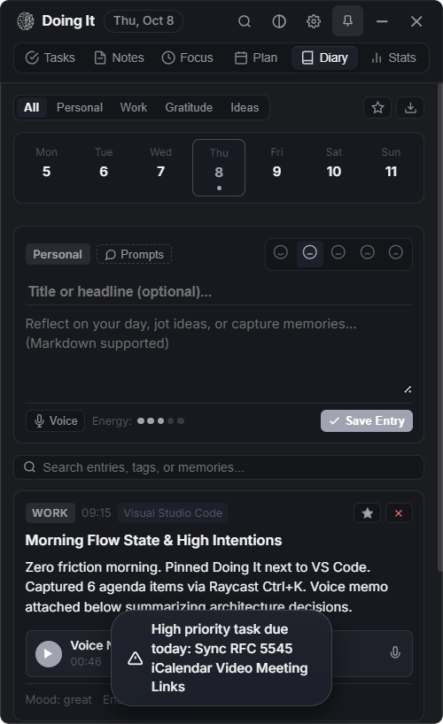

Journaling & Mindfulness
Day One Daily Journal with Built-In Voice Memos
Segregate work reflections from personal gratitude. Capture thoughts using guided daily prompts, record zero-dependency microphone voice notes with custom dark audio players, and rate mood and energy from 1 to 5.
- Multiple Isolated Journals: Work, Personal, Gratitude, and Ideas.
- Offline Voice Recordings: Audio files stay local on your PC with instant playback.
- On This Day Flashbacks: Relive insights from past weeks and months.
